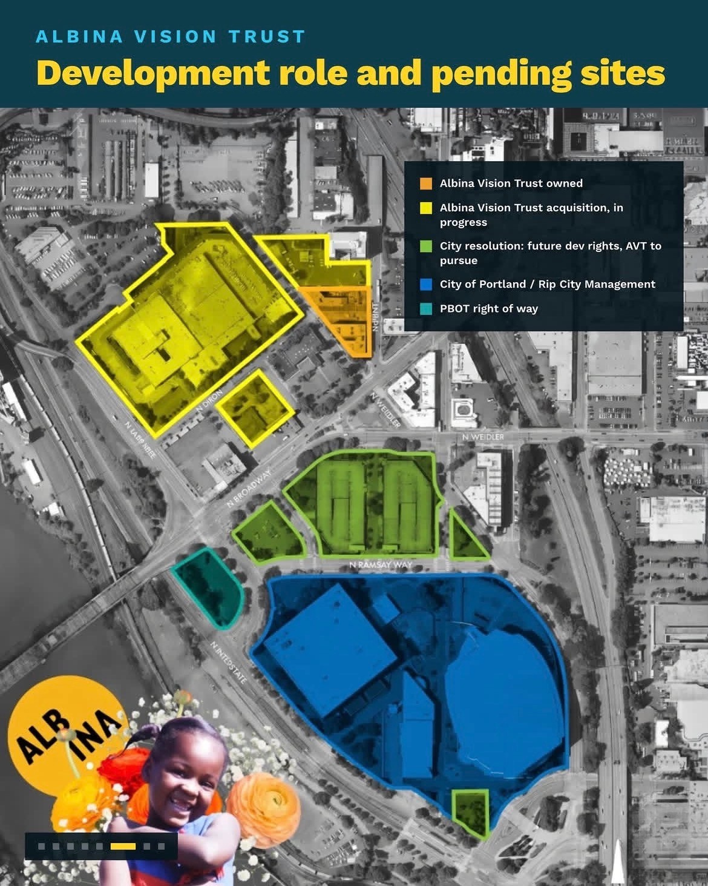

02 — Broader effects
The Arena's Neighbor: Albina Vision Trust
In short: separate from the arena deal itself, a nonprofit called Albina Vision Trust has spent years working to redevelop the historically Black Lower Albina neighborhood next door, and has publicly supported the renovation because the arena functions as an anchor for that broader effort.
Separate from the arena deal itself, there's a related conversation happening about the land next to it. This page covers where that stands, without assuming a particular arena outcome.

Sources
- Portland.gov, "Historical Overview": documents how, in Central Albina, hundreds of homes were razed for the Memorial Coliseum and Interstate 5, and Emanuel Hospital's planned expansion displaced further residents. (Portland.gov)
- North Peninsula Review, Feb 2026, on Yohannes's Legislature testimony; KTVZ and Oregon Governor's Office, Apr 27, 2026, on her remarks at the SB 1501 signing. (North Peninsula Review, KTVZ)
- Albina Vision Trust, "Albina Vision Trust, Portland Trail Blazers announce launch of the Albina Rose Alliance." (Albina Vision Trust)
Background: Lower Albina. Lower Albina was historically one of Portland's most significant Black neighborhoods. Much of the community was displaced in the mid-20th century by the construction of Interstate 5 and the Veterans Memorial Coliseum.1
Albina Vision Trust (AVT). A nonprofit organized around reconnecting and rebuilding Lower Albina into a mixed-use district. On August 11, 2026, Portland's City Life Committee unanimously advanced a resolution directing the city to begin negotiations with AVT over city-owned land adjacent to the Moda Center: two parking garages north of the arena and a small green space to the south. The resolution would give AVT first right to redevelop the parcels, with the city potentially helping arrange private financing and possibly retaining a partial ownership stake. This is a committee-level advancement, not a final Council vote.
Council debate. Councilor Angelita Morillo, while voting to advance the resolution, raised concerns about granting one nonprofit exclusive negotiating rights without a competitive process. A tougher discussion, she said, is coming when the item reaches the full Council.
Why this connects to the arena outcome. AVT's redevelopment plans are explicitly tied to the Moda Center functioning as an anchor tenant, the arena draws more than 750,000 visitors a year, part of the foot traffic AVT's mixed-use vision depends on. The arena renovation and the Lower Albina redevelopment involve separate votes, separate funding, and separate legal agreements, but the two are connected in practice. AVT itself has been a vocal supporter of the renovation. Testifying before the Legislature in February 2026, Executive Director Winta Yohannes said losing the Trail Blazers "would be a devastating blow, echoing past harms." At SB 1501's signing in April 2026, she added that "the success or failure of SB 1501 will be determined by how this deal ultimately impacts an entire neighborhood, not just an arena," and that AVT is "here to ensure that the renovation of the Moda Center meaningfully and materially advances the generational prosperity of the people who will once again call Lower Albina home."2 AVT and the Trail Blazers formalized their relationship in 2024 through the Albina Rose Alliance, a partnership for restorative development in the area.3
Related development: the 1803 Fund. A separate Black-led initiative independently developing property just north of the Moda Center, including new single-family homes and retail space for Black-owned businesses. The 1803 Fund and AVT are partners, not competitors; the Albina Rose Alliance is a partnership between the Trail Blazers and AVT for restorative development in the area, and 1803 Fund CEO Rukaiyah Adams also founded AVT.
We don't know exactly what would happen to these redevelopment plans if the Moda Center renovation doesn't happen. What's clear is that a years-long effort, spanning multiple nonprofits and public-private partnerships, has already gone into revitalizing Lower Albina, and that having the Trail Blazers anchored at the center of that effort has been part of the strategy rather than an afterthought. AVT and the 1803 Fund, the two organizations doing the most work on the ground, have each deliberately positioned themselves alongside the team, through the Albina Rose Alliance and through their own presence immediately next door to the arena.